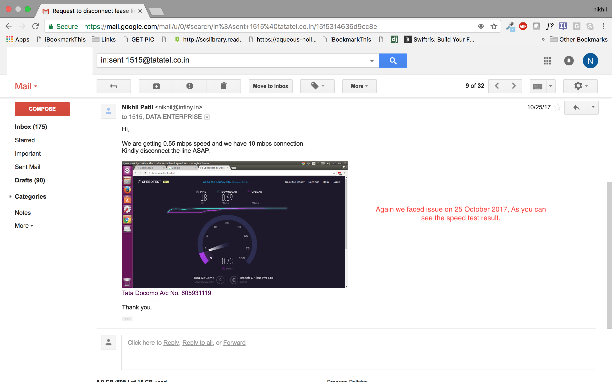

Tata Docomo Leaseline Customer Story
Overview:
We have been a loyal customer of tata docomo leaseline since 30 July 2017 and we where happy for few months but after few months we started facing disconnection and spiking issue. Being operational head, I use to raise the complaint whenever we faced the issue via email which gave us an auto response nothing more then that until we made a call to customer support team.
Sometimes it use to take 24 hrs and sometimes it use to take 2-3 days to the get issue resolved. The connection issues got regular and we started facing financial hit due to inconsistant internet connection. Even a skype call was not possible over 10 mbps lease line. Moreover, We did not get any proper technical support at right time. Support got only activited when we use to make disconnection request. Issue was not resolved from the root cause and the docomo team harassed us by asking the complaint mail thread again and again so we have decided to make a web link so the team can refer it and do to ask me to mail again and again.
I will start with the overall number of complaint raised with the screenshot.
Insights:
I am adding few screenshots from the detail mails below which proves the incapablity of Tata Docomo Lease line to provide contant speend even when one device was connected to network.
Observation from the Tata Docomo Technical Team which was surprising.
Some issue from March 2017 :-
Some issue from May 2017 :-
Some issue from September 2017 :-
Some issue from October 2017 :-

After we made a request to desconnect we got a response
and A Theat of Heavy Penalty from Assistant Manager
But this time we had decided to disconnect because we started facing heavy financial losses due to TATA DOCOMO leaseline Connection issues. After few days we got following bill.
Conclusion:
I request the Tata Docomo Team to just think about the losses we have faced so far due to internet connection as we are web development agency and our business heavly dependes on internet connection. Instead of resolve issue from the core you provided some temporary solution which caused regular connection issues. There is lack of internal communication in your internal team as the account manager which you have provided is clue less about all the issues. Your team asks for all the issues again and again. You threaten your customer who pays bills regulary and send huge panelty amount. I have just one final request, please resolve this bill issue and relase us from constant harrasment. Please do not propose any more solution just disconnect our service without any panelty as its clear from the above mail thread that the Tata Docomo is not able to provide good constant service and that is why we want to disconnect. You cannot force someone to pay for faulty service.